Interaction With Matter¶
MSW Effect¶
Physics of MSW
As neutrinos passing by matter, the effective mass coming from energy change becomes important thus changing it’s eigenstates and propagation.
Neutrinos do interact with matter, mostly electrons in most cases.

\begin{fmfgraph*}(200,180)
\fmfleft{i1,i2}
\fmfright{o1,o2}
\fmf{fermion}{i1,v1,o1}
\fmf{fermion}{i2,v2,o2}
\fmf{photon}{v1,v2}
\fmflabel{$v_e$}{i2}
\fmflabel{$e^-$}{i1}
\fmflabel{$v_e$}{o2}
\fmflabel{$e^-$}{o1}
\fmf{photon,label=$Z$}{v1,v2}
\end{fmfgraph*}

\begin{fmfgraph*}(200,180)
\fmfleft{i1,i2}
\fmfright{o1,o2}
\fmf{fermion}{i1,v1,o1}
\fmf{fermion}{i2,v2,o2}
\fmf{photon}{v1,v2}
\fmflabel{$v_\tau$}{i2}
\fmflabel{$e^-$}{i1}
\fmflabel{$v_\tau$}{o2}
\fmflabel{$e^-$}{o1}
\fmf{photon,label=$Z$}{v1,v2}
\end{fmfgraph*}

\begin{fmfgraph*}(200,180)
\fmfleft{i1,i2}
\fmfright{o1,o2}
\fmf{fermion}{i1,v1,o1}
\fmf{fermion}{i2,v2,o2}
\fmf{photon}{v1,v2}
\fmflabel{$v_e$}{i2}
\fmflabel{$e^-$}{i1}
\fmflabel{$v_e$}{o1}
\fmflabel{$e^-$}{o2}
\fmf{photon,label=$W^{-}$}{v1,v2}
\end{fmfgraph*}
The one that is missing is the charged current for 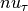 and 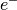 interaction because of lepton number conservation.
The first two diagrams will add two equal terms on the diagonal terms of Hamiltonian, which can be viewed as adding a number times identity matrix thus conserves the eigenstates while shifts the eigenvalues. However, the third diagram will only add a term to the first diagonal term of Hamiltonian, which is the weak coupling 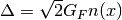 with 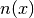 being the number density of electrons.
Identity Matrix and Survival Probability
Identity matrix shifts the eigenvalues up and down homogeneously which changes the evolution of the state. However, since this is only a phase, the calculation of the survival probability will kill this phase.
Weak Interaction
We can guess this interaction term using physics picture. This interaction should be proportional to density of electrons with a coupling constant 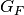. Then check the dimensions.
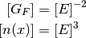
So the dimension is right. The missing constant is 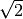.
This symmetry breaking will change the evolution and makes the states more electron neutrino.
This is the reason of MSW effect.
In other words, the first requirement of MSW effect is that the electrons interacts with neutrinos and makes it in a specific state that is heavy if the electron density is strong enough. Meanwhile, if the mixing angle is not that large, a level crossing could happen making the state a light state as the density becomes vacuum. The other requirement, which is obvious, is that the density change should be adiabatic, the meaning of which is the density profile of matter gently reduces to vacuum, leaving enough reaction time for the neutrinos.
The MSW effect itself can be made clear using the example of neutrino oscillations in our sun.
Small Mixing Angle
Take two flavour mixing as an example.
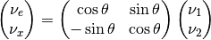
In the small mixing angle limit,
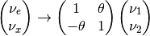
which is very close to an identity matrix. This implies that electron neutrino is more like mass eigenstate 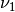. By we mean the state with energy 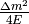 in vacuum.
We need this intuitive picture to understand MSW effect. Electron neutrinos are almost identical to the low mass neutrino mass eigenstate. However, as we will see, due to the matter interaction, the electron flavour neutrino is corresponding to the HEAVY mass eigenstate. This is the key idea in physics of MSW effect.
The Hamiltonian for neutinos with neutrino-matter interaction (in flavour basis) is
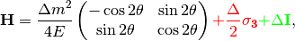
where the last term (green part) can be neglected because this term will only shift all the eigenvalues with the same amount without changing the eigenvectors.
Define a quantities like  for neutrinos ( 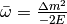 for antineutrinos) and (which might be denoted by 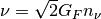 in other lituratures).
for neutrinos ( 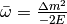 for antineutrinos) and (which might be denoted by 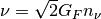 in other lituratures).
Using Pauli matrices, I can decompose this to
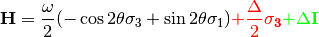
Note
As a reminder, .
Note
The red part is from the charged current Feynman diagram. We have a 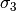 matrix instead of an matrix like
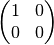
because we rewrite this matrix with Pauli matrices and identy. Then the identities are neglected.
This can be done properly because Pauli matrice and Identy matrix form a complete basis.
In a more compact form, this Hamiltonian is
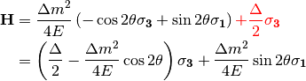
Note
Eigenvalues of 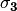 are 1 and -1 with corresponding eigenvectors
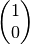
and
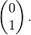
As we have mentioned, this Hamiltonian is in flavour basis. When mixing angle 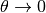, the eigenvectors are almost eigenvectors of which are electron neutrinos and x type neutrinos.
Interesting Limits
Before we really solve the equation of motion, some interesting limits can be shown here.
Interaction  is much larger than cacuum mixing terms. In this case, the Hamiltonian becomes diagonalized and the neutrinos will stay on it’s flavour eigenstates in the propagation.
is much larger than cacuum mixing terms. In this case, the Hamiltonian becomes diagonalized and the neutrinos will stay on it’s flavour eigenstates in the propagation.
Interaction is much smaller than vacuum mixing terms. The propagation reduces to vacuum case.
To see this effect quantitively, we need to diagonalize this Hamiltonian (Can we actually diagonalize the equation of motion? NO!). Equivalently, we can rewrite it in the basis of mass eigenstates 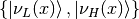,
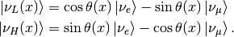
This new rotation in matrix form is
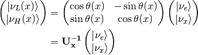
Diagonalize Hamiltonian
To diagonilize it, we need to multiply on both sides the rotation matrix and its inverse,
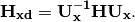
The second step is to set the off diagonal elements to zero. By solving the equaions we can find the 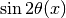 and 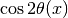.
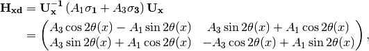
where
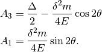
Set the off-diagonal elements to zero,
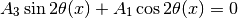
So the solutions are
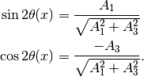
Plug in 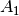 and 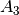
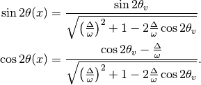
Define 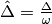 with 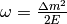, which represents the matter interaction strength compared to the vacuum oscillation.
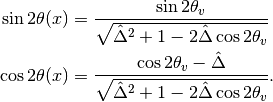
We also have
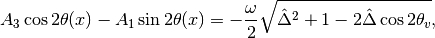
which leads to the result of the diagonalized Hamiltonian
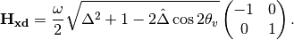
This diagonalize the Hamiltonian LOCALLY. It’s not possible to diagonalize the Hamiltonian globally if the electron number density is not a constant.
The point is, for equation of motion, we have a differentiation with respect to position  ! So even we diagonalize the Hamiltonian, the equation of motion won’t be diagonalized. An extra matrix will occur on the LHS and de-diagonalize the Hamiltonian on RHS.
! So even we diagonalize the Hamiltonian, the equation of motion won’t be diagonalized. An extra matrix will occur on the LHS and de-diagonalize the Hamiltonian on RHS.
Note
As 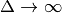, 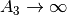 and vanishes. Thus the neutrino will stay on flavour eigenstates.
With the newly defined heavy-light mass eigenstates, we can calculate the propagatioin of neutrinos,
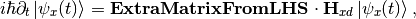
where the 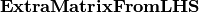 comes from the fact that changing from flavor basis 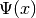 to heavy-light basis 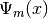 using 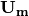,
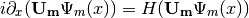
only returns
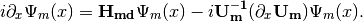
We imediately know the propagation is on the heavy-light mass eigenstates under adiabatic condition WITHOUT solving the equation. The eigenvalue of these states are 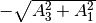 and . The absolute value of these solutions grow as becomes large.
Combining the two terms on RHS,
where
The only part inside that is space dependent is the number density of the electrons . Thus we know immediately that the Hamiltonian is diagonalized if the number density is constant.
Is Adabatic Condition Valid Here?
Haxton’s paper.
Before going into the system, here is a discussion of adiabatic in thermodynamics.
From the two solutions we know there is a gap between the two trajectories. We draw a figure with electron number density as the horizontal axis and energy as the vertical axis.

Neutrino physics by Wick C. Haxton and Barry R. Holstein.
MSW Refraction, Resonance and More¶
Hysteresis Loops of Neutrino Oscillations Due to MSW Effect
Due to MSW effect, a system that is close to adiabaticity but not exactly adiabaticity could exhibit hysteresis effect, i.e., neutrinos going from high density region to low density region then coming back could form a hysteresis loop.
TODO
- Write down the effective potential which depends on the position. Refractive index is defined as .
- Two characteristic length: as the vacuum oscillation length and as the refraction length. As the becomes comparable resonance occurs. For small mixing angle cases, resonance happens when vacuum length is about the length of refraction.
There are three different matrix representatioins that is useful to the calculations.
- Flavor basis;
- Vacuum mass eigenstate basis;
- Instataneous mass eigenstate basis.
Basis of Hamiltonian
In vacuum mass eigenstate basis, the Hamiltonian without matter and self-interaction is easy and straightforward,
To remove the trace, we can subtract a identity matrix
The interaction in flavor basis is
To write down the Hamiltonian in vacuum mass eigenstates, we transform the interaction term to vacuum mass eigenstates by
where  is the PMNS matrix.
is the PMNS matrix.
To write down the Hamiltonian in flavor basis, we transform the vacuum Hamiltonian to flavor basis after remove the trace, which is
We could also write down the Hamiltonian matrix in instantaneous mass eigenstates, which requires a instantaneous diagonalization.
2 Flavor Neutrino Oscillations and Matter Effect¶
Solar Neutrinos
Electron neutrinos are produced in the core of the sun then the neutrinos would propagate out to the surface of the sun without much difficulty. What is the predicted neutrino survival probability?
Interaction with matter plays a big role in neutrino oscillation. As shown previously, the interaction only affects (anti) electron neutrinos. In other words, the interaction term in flavor basis is
where and  is the number density of the electrons. However, to do calculations, since identity matrix doesn’t change the survival probability, we can always make the hamiltonian traceless, which becomes
is the number density of the electrons. However, to do calculations, since identity matrix doesn’t change the survival probability, we can always make the hamiltonian traceless, which becomes
Constant Electron Number Density¶
Suppose we have an environment with constant electron number density, the term goes away. All we have is the diagonalized new Hamiltonian  and the eigenvalues are easily obtained which are
and the eigenvalues are easily obtained which are
The final result for these two eigenvalues are
Meanwhile the eigenstates are denoted as and .
Two Special Cases
Two special cases,
- ;
- .
As for the survival probability for the initial condition that , the result has the same form as the vacuum case, which is
where
is the effective mixing angle which in fact doesn’t depend on if the matter profile is constant.
Vacuum Survival Probability
As an comparison, the vacuum result is
for all electron flavor initial condition.
Adiabatic Limit¶
In some astrophysical environments the electron number density changes very slowly which means the term is much smaller than . By intuition we would expect that this term could be dropped to the lowest order.
The eigen energies are slowing changing with the position of neutrinos,
When the term is very small will dominate and the whole term decreases. On the other hand as becomes large, will dominate and the whole term grows. Mathematically we could find the region when the part decreases and increases.

Energy Levels for MSW effect. We have the up-down symmetry since we shifted the energy by a constant to remove the identity matrix in the Hamiltonian.
The survival probability for the light neutrinos would be
The survival probability for electron flavor neutrino is
if the neutrinos are produced in dense region and the detection happens in vacuum.
Adiabatic Limit of Nuetrino Oscillations in Matter
Before we move on to higher order corrections, it would be nice to understand this phenomenon.
- The vacuum oscillation length can be extracted from vacuum oscillation survival probability. It is .
- In this problem we have another energy scale which is the interaction, . Here we can define another characteristic length .
- MSW resonance happens when the two character lengths are matching with each other. Another way to put it is that the term is minimized so that we have the smallest energy gap which leads to . Equivalently this is the relation
At resonance, we have
This is max mixing of the states which means that at the resonance point
Resonance conditions corresponds to a resonance density which is given by
where
 is a characteristic number density which depends on the energy mixing angles and of the neutrinos.
is a characteristic number density which depends on the energy mixing angles and of the neutrinos.One should notice that if the condition
 is satisfied, the survival probability for has the same the form of vacuum oscillation survival probability for electron neutrinos. The condition is solved,
is satisfied, the survival probability for has the same the form of vacuum oscillation survival probability for electron neutrinos. The condition is solved,which leads to
The first condition is trivial which corresponds to vacuum however the second condition means the interaction oscillation length is doubled compared to resonance point.
Nevertheless, we should always remember to check what survival probability the expression is describing. Here we have survival probability for . At the oscillation becomes vacuum oscillation.
In The Basis of Vacuum Energy Eigenstates
We could also using the basis of vacuum energy eigenstates, in which the vacuum part of the Hamiltonian is
The matter interaction in flavor basis is
It is more convinient to use the traceless potential
Transform it to vacuum energy eigenstate basis, we have
The Hamiltonian in this problem becomes
General Discussion of Matter Effect¶
This part is a very general discussion of the matter effect [Parke1986].
To work in flavor basis, we use the subscript to denote the flavor basis representation with mass effect. The equation of motion in flavor basis can be written down as
where
There are three stages for neutrinos to travel from the core of the sun to vacuum.
At the core, electron neutrinos are produced. The electron flavor state should be projected onto heavy and light instantaneous mass eigenstates. What fallows is the that the propagation is adiabatic until the transition happens. As we have seen in adiabatic situation, the states will stay in heavy and light states all along the evolution if the system starts from heavy or light state,
where the heavy and light states are defined in the adiabatic situation previously. This is what happens before the passing through of the resonance.
At the resonance point, light instantaneous mass eigenstate has a probability to jump to the heavy state and vice versa. When it comes to the resonance point which is non-adiabatic propagation, the transition between the states and will mix the heavy and light state up.
where the relations between the constants are determined using the condition that and are orthonormal, which leads to the conclusion that
After the resonance point, the heavy and light states will continue on their adiabatic propagation.
Helpful Notes
The relation between and is given by
Electron neutrinos are produced in a dense region as , which are partially transformed to other the other neutrinos due to matter and the resonance then it propagates as if it satisfies the adiabatic condition again. The initial state in terms of light and heavy state is
The final state right before the resonance is
After the resonance the state is described by the general jumping
![\ket{\Psi_{m}(x)}= & \cos\theta_m(x_0) \exp\left( -i \int_{x_0}^{x_{r-}} \frac{\omega_m(x)}{2} dx \right) \left( a_L \exp( -i \int_{x_r}^x \frac{\omega_m(x')}{2}dx' ) \ket{\nu_L(x)} + a_H \exp( i\int_{x_r}^x \frac{\omega_m(x')}{2}dx' ) \ket{\nu_H(x)} \right) \\
& + \sin\theta_m(x_{0}) \exp\left( i \int_{x_0}^{x_{r-}} \frac{\omega_m(x)}{2} dx \right) \left( -a_H^* \exp( -i \int_{x_r}^x \frac{\omega_m(x')}{2}dx' ) \ket{\nu_L(x)} + a_L^* \exp( i\int_{x_r}^x \frac{\omega_m(x')}{2}dx' ) \ket{\nu_H(x)} \right)](_images/math/d29ee1001360f6bf565ca1d300b50815e1dc2919.png)
in which the is actually thus
![\ket{\Psi_{m}(x)}= & \cos\theta_m(x_0) \exp\left( -i \int_{x_0}^{x_{r}} \frac{\omega_m(x)}{2} dx \right) \left( a_L \exp( -i \int_{x_r}^x \frac{\omega_m(x')}{2}dx' ) \ket{\nu_L(x)} + a_H \exp( i\int_{x_r}^x \frac{\omega_m(x')}{2}dx' ) \ket{\nu_H(x)} \right) \\
& + \sin\theta_m(x_{0}) \exp\left( i \int_{x_0}^{x_{r-}} \frac{\omega_m(x)}{2} dx \right) \left( -a_H^* \exp( -i \int_{x_r}^x \frac{\omega_m(x')}{2}dx' ) \ket{\nu_L(x)} + a_L^* \exp( i\int_{x_r}^x \frac{\omega_m(x')}{2}dx' ) \ket{\nu_H(x)} \right)](_images/math/d95c7d39cfc27aee56df98101fd4dc138f6279bb.png)
To calculate the survival probability it is easier to use flavor basis, hence we have another form of which is
![\ket{\Psi_{m}(x)}= & \left[ \cos\theta_m(x_0) \exp\left( -i \int_{x_0}^{x_{r}} \frac{\omega_m(x')}{2} dx' \right) a_L \exp( -i \int_{x_r}^x \frac{\omega_m(x')}{2}dx' ) \right. \\
& \left. - \sin\theta_m(x_{0}) \exp\left( i \int_{x_0}^{x_{r-}} \frac{\omega_m(x')}{2} dx' \right) a_H^* \exp( -i \int_{x_r}^x \frac{\omega_m(x')}{2}dx' ) \right] \ket{\nu_L(x)}\\
& + \left[ \cos\theta_m(x_0) \exp\left( -i \int_{x_0}^{x_{r}} \frac{\omega_m(x)}{2} dx \right) a_H \exp( i\int_{x_r}^x \frac{\omega_m(x')}{2}dx' ) \right. \\
& \left. + \sin\theta_m(x_{0}) \exp\left( i \int_{x_0}^{x_{r-}} \frac{\omega_m(x)}{2} dx \right) a_L^* \exp( i\int_{x_r}^x \frac{\omega_m(x')}{2}dx' ) \right] \ket{\nu_H(x)} \\
=& \left[ \cos\theta_m(x_0) \exp\left( -i \int_{x_0}^{x_{r}} \frac{\omega_m(x)}{2} dx \right) a_L \exp( -i \int_{x_r}^x \frac{\omega_m(x')}{2}dx' ) \right. \\
& \left. - \sin\theta_m(x_{0}) \exp\left( i \int_{x_0}^{x_{r-}} \frac{\omega_m(x)}{2} dx \right) a_H^* \exp( -i \int_{x_r}^x \frac{\omega_m(x')}{2}dx' ) \right] ( \cos\theta_m(x)\ket{\nu_e} - \sin\theta_m(x)\ket{\nu_x} )\\
& + \left[ \cos\theta_m(x_0) \exp\left( -i \int_{x_0}^{x_{r}} \frac{\omega_m(x)}{2} dx \right) a_H \exp( i\int_{x_r}^x \frac{\omega_m(x')}{2}dx' ) \right. \\
& \left. + \sin\theta_m(x_{0}) \exp\left( i \int_{x_0}^{x_{r-}} \frac{\omega_m(x)}{2} dx \right) a_L^* \exp( i\int_{x_r}^x \frac{\omega_m(x')}{2}dx' ) \right] ( \sin\theta_m(x)\ket{\nu_e} + \cos\theta_m(x)\ket{\nu_x})](_images/math/ee42477cdf762872cdafb7ca984226f52f99a39c.png)
Since , and are real while and are complex, survival amplitude of electron neutrinos is given by
![&\braket{\Psi_m(0)}{\Psi_m(x)} \\
= & \braket{\nu_e}{\Psi_m(x)} \\
= & \left[ \cos\theta_m(x_0) \exp\left( -i \int_{x_0}^{x_{r}} \frac{\omega_m(x')}{2} dx' \right) a_L \exp( -i \int_{x_r}^x \frac{\omega_m(x')}{2}dx' ) \right. \\
& \left. - \sin\theta_m(x_{0}) \exp\left( i \int_{x_0}^{x_{r}} \frac{\omega_m(x')}{2} dx' \right) a_H^* \exp( -i \int_{x_r}^x \frac{\omega_m(x')}{2}dx' ) \right] \cos\theta_m(x) \\
& + \left[ \cos\theta_m(x_0) \exp\left( -i \int_{x_0}^{x_{r}} \frac{\omega_m(x')}{2} dx' \right) a_H \exp( i\int_{x_r}^x \frac{\omega_m(x')}{2}dx' ) \right. \\
& \left. + \sin\theta_m(x_{0}) \exp\left( i \int_{x_0}^{x_{r}} \frac{\omega_m(x')}{2} dx' \right) a_L^* \exp( i\int_{x_r}^x \frac{\omega_m(x')}{2}dx' ) \right] \sin\theta_m(x) \\
=& A_L \exp\left( -i \int_{x_r}^{x} \frac{\omega_m(x')}{2} dx' \right) + A_H \exp\left( i\int_{x_r}^x \frac{\omega_m(x')}{2}dx' \right),](_images/math/a55b2114bf7ee2290352bfe3f8a04ef27b7adc76.png)
where the coefficients are
The detection is in a region where matter density is very small, thus we use  which means the effective mixing angle becomes vacuum mixing angle. The probability is the square of the amplitude,
which means the effective mixing angle becomes vacuum mixing angle. The probability is the square of the amplitude,
where is defined as
Note that for any complex number ,
which means that the previous result can be simplified to
with the definition that is the argument of .
However the coefficients and are still not known yet. The trick is to average over the detection and production position. The average over removes the  term due to the dependent of for and averages to
term due to the dependent of for and averages to  , which results in
, which results in
Applying the condition that , the probability becomes
where is the argument of and is .
The average over production removes the last part.
Notice that in fact the detection happens in vacuum, which means  .
.
This means that the adiabatic result is of the form
Define a transition probability at resonance
which can be determined by the Landau-Zener transition analytically (first order) to the first order.
| [Parke1986] | Parke, S. J. (1986). Nonadiabatic Level Crossing in Resonant Neutrino Oscillations. Physical Review Letters, 57(10), 1275–1278. doi:10.1103/PhysRevLett.57.1275 |
Landau-Zener Transition of Neutrinos¶
As discussed in the previous subsection, a transition probability between the two states and would change the final survival probabilty. Thus calculating this transition probability will be done in this subsection.
Recall that the effective potential is
where
and can be found by solving the equations. Plug in the results and applying the trick that
we have
Since we are dealing with resonance which is located at , the quantities can be expanded around .
To keep only first order of in the effective potential, we have to expand around
Pauli Matrices
The effective potential can be written in terms of ,
The equation of motion up to first order of becomes
We have already solved
where the eigenstates are and with eigenvalues and respectively.
To save typing we define
so that the effective potential reduces to a simple form
The general solution to the equation we need to solve can be written as
where
Hamiltonian applied to this state results in
Plug the state into the Schrodinger equation, we have
in which is
The boundary condition for such a problem in general is
It should be made clear that the problem we will be discussing is the transition from one state to another in first order approximation. That means we will confine this system so that the initial condition is . In terms of and ,
The first order differential equations of and can be combined and produce a second order differential equation.
If we use the approximation that is a constant, where in fact we are assuming that is linearly depending on which means is a linear function of . Thus is a constant. The equation simplifies to
where is constant.
In the paper by Zener, [Zener1932] we need to do substitution of the function so that the equation reduces to Weber equation.
The eigenvalues are not varying very fast and satisfies the condition that
where is a constant and comes from the first order of the expression.
Define a new variable  which is determined by
which is determined by
The Trick
This is done by assuming and plugging it back to the equation then set the coefficient of to  .}
.}
Then we get a simple equation about ,
which can be reduced to the standard form of Weber equation with the new parameters which are are found by using a single assumption that ,
where ( ) and . The equation we need to solve becomes
Parabolic Cylinder Function

The parabolic cylinder function for (blue) and (red). But for imaginary  the function blows up.
the function blows up.
The Weber equation has two independent solutions and . They are also called Parabolic Cylinder Function on wolfram mathworld.
Since blows up for the line on complex plane , the solution that works is . Then the solution to is
or
The asymptotic expression for on the line of and  at infinite contour radius on complex plane are
at infinite contour radius on complex plane are
So the real part of these asymptotic expressions are
Apply the boundary condition we have the results of the coefficients.
where .
What we need to find out is the state at , which depends on the asymptotic values of ,
or
The transition rate is determined by
Now we understand the transition probability is given by
Suppose we have the initial condition as , the system can jump to since the state at arbitrary position is a mixing of the two states. The probability of jumping is given by [SJParke1986] [Petcov1987]
The survival probability can be calculated by applying this transition probability to the result we had previously.
To be clear, if electron neutrinos are produced inside core of our sun, it will be almost the heavy state. Since the interaction with matter is very strong, it transfers to with probability due to the gradient of the matter profile which works as the perturbation. Thus the final state will be a mixing of and .
| [Zener1932] | Zener, C. (1932). Non-Adiabatic Crossing of Energy Levels. Proceedings of the Royal Society A: Mathematical, Physical and Engineering Sciences, 137(833), 696–702. doi:10.1098/rspa.1932.0165 |
| [SJParke1986] | Parke, S. J. (1986). Nonadiabatic Level Crossing in Resonant Neutrino Oscillations. Physical Review Letters, 57(10), 1275–1278. doi:10.1103/PhysRevLett.57.1275 |
| [Petcov1987] | Petcov, S. T. (1987). On the non-adiabatic neutrino oscillations in matter. Physics Letters B, 191(3), 299–303. doi:10.1016/0370-2693(87)90259-0 |
Numerical Results¶
2 Flavor Oscillation¶
The equation of motion in flavor basis is
where
Writing down the dimensionless equation, we have
As for the data of the sun I use a simple exponential distribution. The data is also from the paper by Bahcall. The model using just exponential is not accurate however it is enough to make the point in MSW resonance. So I choose a solar model in which the core density is . The distribution is
The numerical results can be obtains by plugging this density profile into the differential equation solver.

Numerical results for electron flavor neutrino probability and the other flavor neutrino probability when the electron density profile is .

Number density profile .
Since we can easily predict the survival probability using simple theory. Here are some comparision. The following figures are for matter profile and vacuum oscillation frequency respectively. As we can see that in this two flavor special case, the problem doesn’t dependent on energy and mass difference independently but depends only on . If we choose , the four figures are corresponding to energies .

The grey line is theoretical survival probability at . In this calculation the vacuum oscillation frequency is set to .

The grey line is theoretical survival probability at . In this calculation the vacuum oscillation frequency is set to .

The grey line is theoretical survival probability at . In this calculation the vacuum oscillation frequency is set to .

The grey line is theoretical survival probability at . In this calculation the vacuum oscillation frequency is set to .
Three flavor Oscillations¶
Vacuum part of the Hamiltonian is
The matter interaction in flavor basis is
Thus to work in vacuum mass eigenstates, we need a transformation
Then the Hamiltonian becomes
Trace of this Hamiltonian is . To find the traceless part, we can use the relation [ohlsson2000]
where  is the rank.
is the rank.
The traceless part of Hamiltonian becomes
Define the following quantities where only two of them are linearly independent
We define an energy scale related to the radius of the sun
The EoM can be written in a dimensionless manner,
![i\partial_{\hat x} \Psi_{m} = \begin{pmatrix}
\tilde\Delta U_{e1}^2 - \frac{1}{3}\tilde\Delta + \frac{1}{3}(\frac{\Delta m_{12}^2 + \Delta m_{13}^2}{2E\epsilon_S}) & \tilde\Delta U_{e1}U_{e2} & \tilde\Delta U_{e1} U_{e3} \\
\tilde\Delta U_{e2} U_{e1} & \tilde\Delta U_{e2}^2 -\frac{1}{3}\tilde\Delta + \frac{1}{3}\frac{\Delta m_{12}^2 + \Delta m_{23}^2}{2E\epsilon_S} & \tilde\Delta U_{e2}U_{e3} \\
\tilde\Delta U_{e1} U_{e3} & \tilde\Delta U_{e2} U_{e3} & \tilde\Delta U_{e3}^2 -\frac{1}{3} \tilde\Delta + \frac{1}{3} \frac{\Delta m_{13}^2 + \Delta m_{23}^2 }{2E\epsilon_S}
\end{pmatrix}\Psi_m ,](_images/math/c9caffe4e826e831a9db11c1cf35eaa3cb62a18b.png)
where .
The parameters for this calculation in units of are
For these parameters there is only resonance for .
A quick check over the different energy scales.
Vacuum energy scales in normal hierarchy
Matter related scale for density profile
Matter related scale for density profile

Normalization factor as a function of distance.

Probability for each flavor of neutrinos.
Applying a number density function to the system, the small scale oscillations are revived,

Normalization of the states for numerical 3 flavor oscillation in the sun with density profile .

Numerical results for 3 flavor oscillation in the sun with density profile .

Eigenenergies for density profile .

Survival probabilities for different vacuum mass eigenstates for 3 flavor oscillation in the sun with density profile .
An interesting notion is the survival probability for the instantaneous eigenstates.

Probability for the instantaneous eigenstates for matter profile .
Lower matter density will have less suppression on vacuum oscillations.

Numerical results for 3 flavor oscillation in the sun with density profile .
| [ohlsson2000] | Ohlsson, T., & Snellman, H. (1999). Three flavor neutrino oscillations in matter, 2768(2000), 25. doi:10.1063/1.533270 |
Ternary Diagram¶
High matter density suppresses the vacuum oscillations which is clearly shown on a ternary diagram.

Ternary diagram for MSW effect shows that the vacuum oscillations in this case is suppressed. Comparing this with the survival probability, the survival probability for electron neutrino drops to a value and the rapid oscillations start to show up. The drop is the movement in the ternary diagram from the right-bottom cornor to the tau neutrino axis. These rapid oscillations corresponds to the T-shaped tip at the other end of the line.

Ternary diagram for MSW effect with homogeneously descretized position with matter profile . We can see clearly that the system stays on the two ends to the line for a longer time that in the middle where the transition happens very quickly. This can also be seen in the survival probability plot.

Ternary diagram for instantaneous eigenstates with matter profile . The system starts from almost the second instantaneous state then moves along the state that .

Ternary diagram for MSW effect with inverted hierarchy . The shape changes a lot since the frequencies changes a lot.
Refs and Notes¶
- Wolfenstein, L. (1978). Neutrino oscillations in matter. Physical Review D, 17(9), 2369–2374. doi:10.1103/PhysRevD.17.2369
- Wolfenstein, L. (1979). Neutrino oscillations and stellar collapse. Physical Review D, 20(10), 2634–2635. doi:10.1103/PhysRevD.20.2634
- Parke, S. J. (1986). Nonadiabatic Level Crossing in Resonant Neutrino Oscillations. Physical Review Letters, 57(10), 1275–1278. doi:10.1103/PhysRevLett.57.1275
- Bethe, H. A. (1986). Possible Explanation of the Solar-Neutrino Puzzle. Physical Review Letters, 56(12), 1305–1308. doi:10.1103/PhysRevLett.56.1305